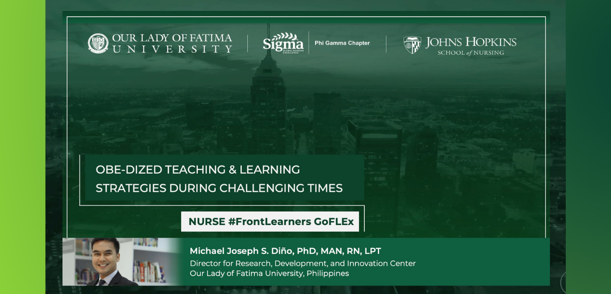

November 15, 2021
Defying gravity brought on by the COVID-19 pandemic and serving as a "salute" to the ability of humanity to bounce back was a successful convergence of nurses and health practitioners in an international conference.
On November 6 to 10, 2021, the leading organization on global nursing excellence, SIGMA, hosted their 46th Biennial Convention in Indianapolis, Indiana, USA. Bringing together 2,051 attendees from 47 countries and seven regions, the hybrid event involved both in-person and virtual modes.
Themed "Honor the Past, Remember the Present, Create the Future", the convention also marked 100 years of Sigma Nursing. Notably, the five-day business assemblage saw representatives from Our Lady of Fatima University making their presence felt.
A November 5th pre-conference event, billed as "ONLINE-Originating Novel Learning Innovations in Nursing Education [In-person and Virtual]" and designated as Excellence in Nursing Education Day, featured OLFU's Dr. Michael Joseph Dino, Director of the Research Development and Innovation Center. With his segment entitled "Nurse #Frontlearners GoFLEX: OBE-dized Teaching and Learning Strategies during Challenging Times", Dr. Dino presented OLFU's GoFLEX model for teaching and learning within an outcomes-based approach during the COVID-19 pandemic. He showcased best practices using contemporary technology and adaptive traditional techniques in enhancing student experience in both virtual and blended learning modalities.
Then, members of OLFU's College of Nursing "took the virtual stage" at the convention through their researches:
POSTER PRESENTATIONS (Virtual)
"COVID-19 Anxiety and Stigma as Moderatos of the Job Demands and ProQOL among Filipino Nurses". The research makes an in-depth study of Filipino nurses handling COVID-19 patients; of how the pandemic's resulting anxiety and stigma have impacted on job demands brought upon the nurses. Comprised of OLFU's nursing students, the team was led by Primary Presenting Author Carmina Angeli Caparaz who recieved support from more than able support from Secondary Presenting Authors: Ma. Andrea Arceo, Lovely Shane Clavite, Ma. Bernie Mae Marquez, and Francesca Alysse Perez. Serving as advisors were OLFU Professors Sharon Cajayon, Brylle Capili, and Dr. Michael Joseph Dino.
Student Nurses Caparaz, Arceo, Clavite, Marquez, and Perez were recognized by Sigma as Rising Stars Presenters.
"COVID-19 Health Education and Promotion Strategies for Children: An Integrative Review". Authored and delivered by Dr. Irvin Ong and Dr. Dino.
"Doctoral Programs for Nurses in the Philippines: Perceived Importance, Impact, Challenges, Chances, and Choices". Authored and presented by Dr. Kenneth Veluya.
Distinctions
During the Biennial Convention, OLFU's very own Dr. Michael Joseph Dino received two awards from Sigma.
First, he was awarded the Virginia Henderson Fellow for his philanthropic leadership in advancing research for nurses who are improving world health. The Fellow is in honor of Virginia A. Henderson who is considered as the leading American nurse of the 20th century, and who is known internationally for her lasting influence on nursing practice, education, and research.
Then Dr. Dino likewise received the Chapter Key Award on behalf of progressive contributions made by the Phi Gamma Chapter where Dr. Dino serves as the current President.
Rise to the top!